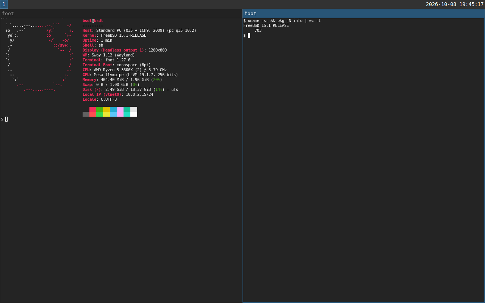

bsdt
Repeatable FreeBSD development VMs from a TOML file.
Describe the machine you need in a bsdt.toml, run
bsdt up, and get the same FreeBSD environment every time.
It is docker compose up for BSD targets, while you keep
working on Linux or macOS.
$ cat bsdt.toml [vm] os = "freebsd" version = "15.1" [packages] install = ["rust"] $ bsdt up bsdt: booting freebsd 15.1 (amd64) bsdt: installing packages ready: freebsd 15.1 at /home/bsdt/myproject $ bsdt exec -- cargo test
Why
bsdt exists to make testing on FreeBSD easy for maintainers who don't use it as their daily driver. If your software should work on FreeBSD but you build it on Linux or macOS, you shouldn't have to install, configure and look after a FreeBSD machine to check that it does. Describe what the build needs, run one command, and test there.
- Official images. bsdt boots the FreeBSD project's own cloud images in QEMU, checked against the release checksums and cached after the first download.
- Throwaway disks. Every project gets a copy-on-write
disk on top of the cached image, so
bsdt destroy && bsdt upstarts over from a clean machine in under a minute. - Your files, in the VM. The project is synced into
the guest before every command, and
bsdt execruns in the matching directory, so you edit on the host and build on FreeBSD. - Fast where it can be. KVM on Linux and the Hypervisor framework on macOS, so Apple Silicon gets a native aarch64 guest.
Install
bsdt is a Rust program published on crates.io. With a Rust toolchain installed:
$ cargo install bsdt $ bsdt man --install # optional, so `man bsdt` works
bsdt drives tools that are already on most systems. It needs QEMU,
ssh, rsync and curl, plus a C
compiler while cargo install builds it.
Debian and Ubuntu
$ sudo apt install qemu-system-x86 qemu-utils rsync curl build-essential
On an arm64 machine, install qemu-system-arm and
qemu-efi-aarch64 instead of qemu-system-x86.
Add yourself to the kvm group if
/dev/kvm is not writable, or VMs will run without
hardware acceleration.
macOS
$ brew install qemu
ssh, rsync and curl ship with macOS, and Homebrew's QEMU includes the firmware aarch64 guests need.
For the desktop
A VNC viewer, if you want gui = true:
sudo apt install tigervnc-viewer on Linux,
brew install --cask tigervnc-viewer on macOS.
Quick start
$ cd myproject $ bsdt init # write a starter bsdt.toml $ bsdt up # boot; the first run downloads and provisions $ bsdt exec -- make test # sync the project, run a command in the VM $ bsdt ssh # a shell in the synced directory $ bsdt down # shut down, keeping the disk $ bsdt destroy # delete the VM and start fresh next time
The first bsdt up downloads a FreeBSD image of about
650 MB. After that, a new VM is ready in about half a minute and
an existing one boots in about fifteen seconds.
The environment file
Only os and version are required; everything
else has a default.
# bsdt.toml [vm] os = "freebsd" version = "15.1" memory = "4G" # also cpus, disk, arch, filesystem ports = ["8080"] # 127.0.0.1:8080 on the host, 8080 in the VM [packages] install = ["rust", "git"] [sync] exclude = ["target"] # build output stays in the VM between syncs [provision] root = ["sysrc nginx_enable=YES"] # as root, on first boot run = ["cargo fetch"] # as you, in the project directory
Use bsdt -f other.toml to keep several VMs for one project,
such as one on an older release. The
manual describes every key.
A desktop, when you need one
Add gui = true under [vm] and
bsdt up installs a sway desktop in the VM and opens it in a
VNC viewer on your machine. Nothing else needs configuring.

The VM gets an emulated USB keyboard and tablet, which the guest sees
as real devices in /dev/input. bsdt key alt+return
and bsdt type --enter 'make run' press keys on them, so you
can drive graphical programs, or anything that reads input devices,
from a script. input = true adds the devices without a
desktop.
Commands
init | Write a starter bsdt.toml. |
up | Boot the VM, creating and provisioning it on first use. |
exec -- cmd | Sync, then run a command in the VM. |
ssh | Open a shell in the synced directory. |
sync | Copy the project into the VM. |
provision | Install packages and run the provision commands again. |
status | Show whether the VM is running, and its ports. |
logs | Print the VM's serial console. |
gui | Reopen the desktop window. |
key, type | Press keys or type text on the VM's keyboard. |
down | Shut the VM down, keeping its disk. |
destroy | Delete the VM's disk and state. |
pull, images | Download or list cached base images. |
The manual page has the details, and is also
in the binary: bsdt man.
How it works
- The base image is FreeBSD's
BASIC-CLOUDINITqcow2, downloaded once into your cache directory and verified againstCHECKSUM.SHA256. - On first boot, a small configuration disk tells FreeBSD's own
nuageinitto create absdtuser and accept a key generated for this VM. No ISO tools are needed on the host. - After that, everything goes over SSH on a port bound to
127.0.0.1: packages throughpkg, your files throughrsync, and your commands. - VM state lives in
.bsdt/beside yourbsdt.toml, which ignores itself in git.
Status
FreeBSD guests work today, tested with FreeBSD 15.1 on Linux hosts. macOS hosts and aarch64 guests are supported but have seen less use. NetBSD is next, then OpenBSD. Bug reports and ideas are welcome on GitHub.
Why not Windows?
A common question on serious software projects is why it doesn't run on Windows. I've never understood the question. Windows aren't really computers; in most cases they're just panes of glass. The word comes from the Old Norse vindauga, "wind eye", from when windows were only holes in a wall. Either way, no kind of window has ever been good at running software.